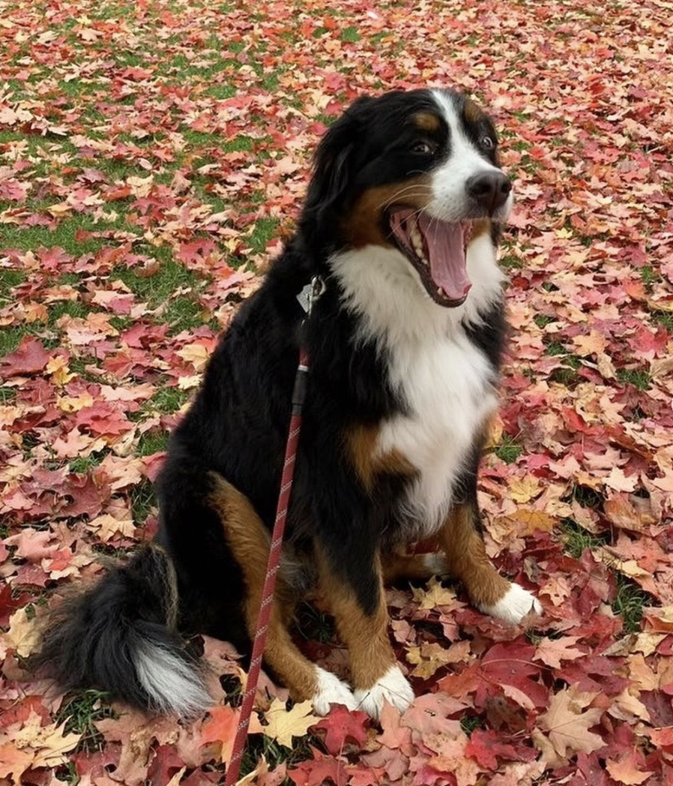

Let your dog sniff aroundDogs' noses are equivalent to our eyes!
|
Always pick up your dog's poopMake sure you have waste bags before you leave the house.
Throw the dog poop bag away in a trash can and dispose properly.
|
Bring enough water for your dogDogs have a harder time regulating their temperature than humans, causing them to overheat more easily. Since dogs sweat by panting they become dehydrated during exercise, especially in warm temperatures.
|
It is important to check the weather when you plan your walkYou should consider the temperature of the surface that your dog will be walking on as it can be crucial to their safety. What are the hazards and opportunities?
|
 |
Ask owners before approaching other dogsMake sure other dogs and dog owners are comfortable with you before greeting them
Approach others cautiously and carefully
|
Pay attention to your dog and your surroundingsThere might be distractions around you -- make sure your dog is with you at all times!
|
Be aware of leash pullingAvoid jerking or yanging on your dog's leash/harness. Gently reorient their direction during the walk
|
Get to know your dog's personality before going on your first walkAre they going to bark at other dogs?
Are they going to chase squirrels or cross the street without your permission?
Are they good with children?
|